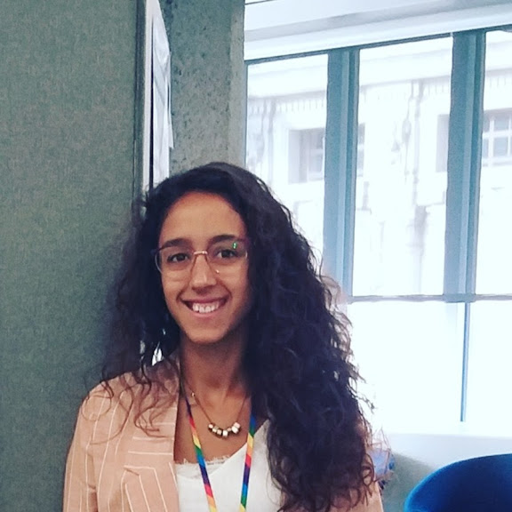
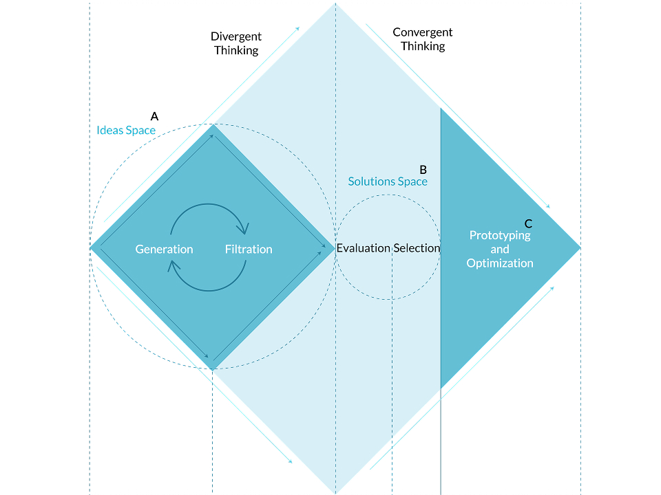
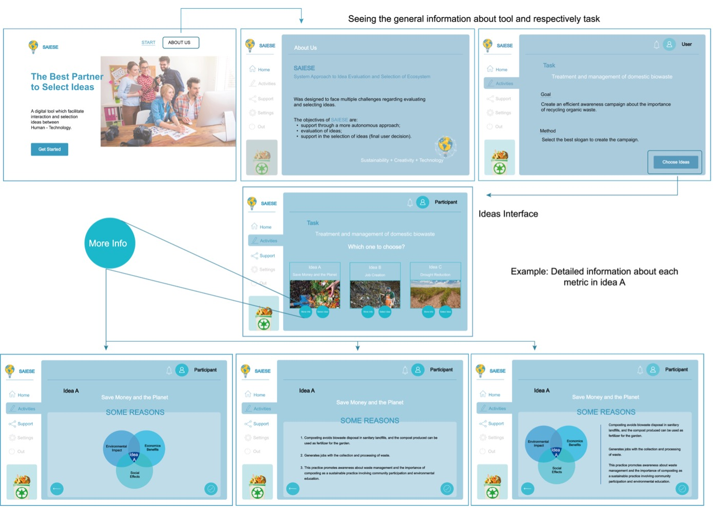
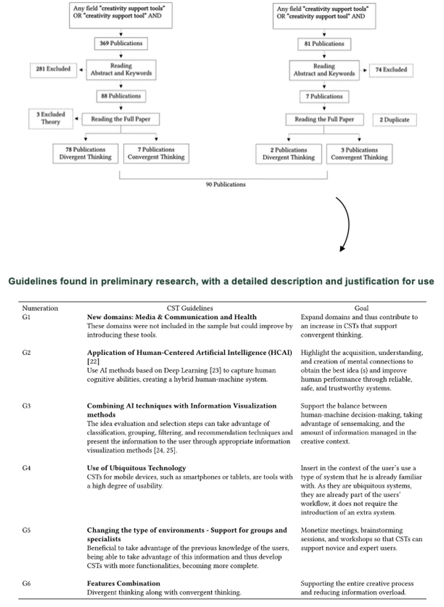
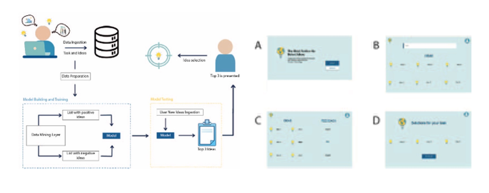
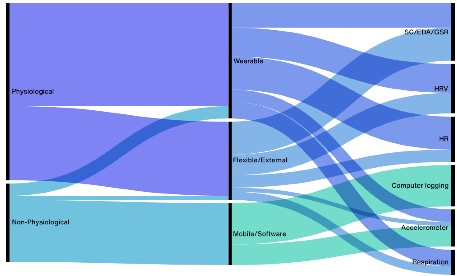
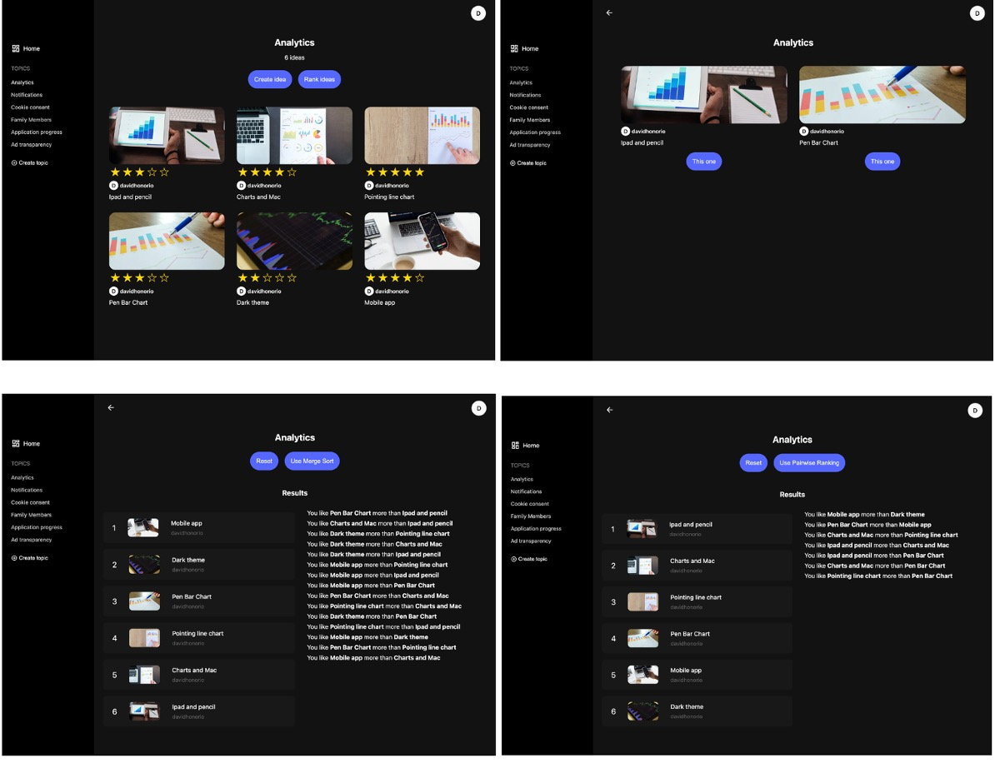
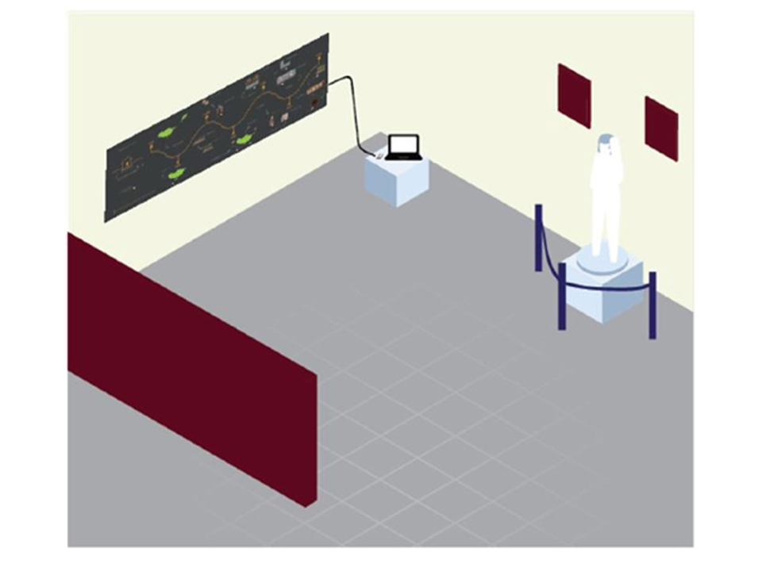
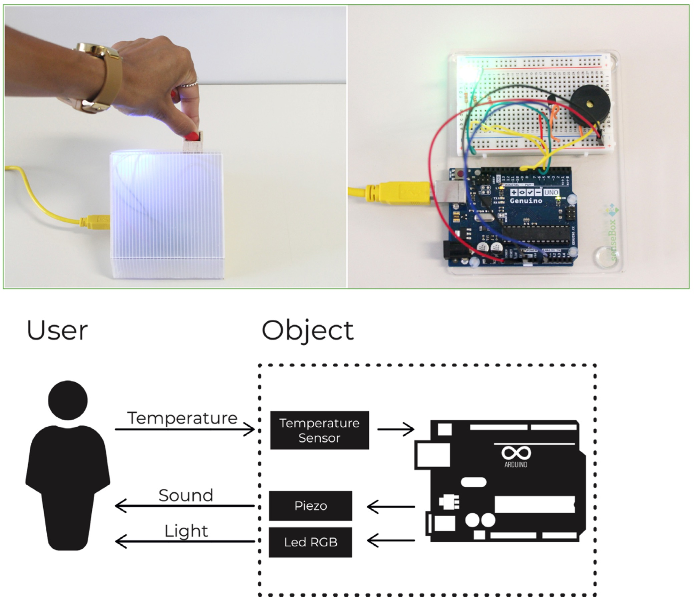

I believe that technology plays a crucial role in shaping a better society. My research adopts a human-centered perspective, carefully considering the influence and impact that technological systems have on people. In particular, I study how interactive systems can support human creativity and decision-making in AI-mediated environments, preserving human agency.
To date, my research has focused on three main areas

ECCE 2025
We present the Divergent-Convergent Thinking Framework (DCTF) to support an understanding of the composition of the creative spectrum. We propose six dimensions and four challenges and opportunities to guide the analysis of existing CSTs, the development of future CSTs, and their integration into users' workflows.

ICGI 2024
Creativity is seen as an aspiration to recreate and discover new paths to accelerate sustainability transitions. Our work aims to articulate support for sustainable solutions through convergent thinking, diverse multimedia visualizations, and three evaluative metrics within a user interface (UI) design.

C&C 2023
Creativity Support Tools (CSTs) have grown exponentially in the HCI field. However, this growth has always leaned towards divergent thinking, thus neglecting convergent thinking. The research focused on four major points: i) the domain of the tool, ii) the type of system and interface developed in the tools, iii) the methodology used, and iv) the creative context of the tools. We present six guidelines to support the improvement of existing and the development of new CSTs.
Cited by Yale & Harvard, 2024
C&C 2023
Investing in new ideas is fundamental and promising for innovation in several sectors. Most European citizens feel that they need to do more to help the planet’s sustainability, and, as a result, human resources are exposed to various pressures with incalculable speed. This project aims to develop a Creativity Support Tool (CST) to help creative workplace workers generate new and useful ideas to reduce consumerist behavior.

Int. J. Environ. Res. Public Health 2022
Long-term stress is associated with a decline in global health, affecting social, intellectual, and economic development alike. This review paper offers an overview of the current interactive approaches used for relieving work-related stress associated with mental health. Designing systems that capitalize on embodied interaction principles is paramount, especially in the post-pandemic context, as the concepts of physical and mental safety take on new meanings that must be consciously and carefully addressed, particularly in workplace settings.

C&C 2022
Betting on new and promising ideas is fundamental to innovation across sectors, helping the world that faces so many adversities. To increase these ideas, the stages of evaluation and selection of ideas in the creative processes need to be improved and not neglected. To minimize this problem and advance scientific research in creativity-oriented HCI, we present a tool for selecting ideas after brainstorming sessions.

HCI International 2020
Today, technology offers exciting and new possibilities to bring visitors closer to museums. As a result of this development, visitor requirements increased. We introduce a new approach to making the visitor experience more immersive and engaging, "StoryWall", a tangible user interface.

UbiComp/ISWC Adjunct 2019
Long-term stress is a leading cause of global health loss. Despite its clear influence on productivity, mental health continues to be neglected in work environments. To help reduce this problem, we present LightStress, a tangible affective artifact that adapts itself to the user's needs in order to improve their mental well-being.